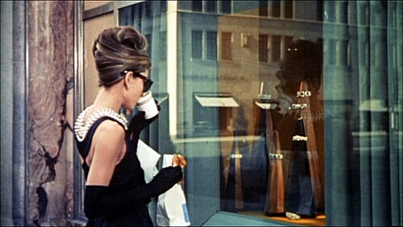

Black Givenchy dress of Audrey Hepburn.
Audrey Hepburn wore a "little black dress" in the 1961 romantic comedy film Breakfast at Tiffany's. The garment was originally designed by Hubert de Givenchy, with three existing copies preserved to date. A studio copy of this dress was worn during the opening scene of the film, while another during a social party held at the apartment of the main protagonist. The dress has been described as one of the most iconic clothing items of the twentieth century.
History
Audrey Hepburn was a close friend of French designer Givenchy, referring to the designer as her "best friend" while he considered her his "sister".

In 1961, Givenchy designed a little black dress for the opening scene of Blake Edwards' romantic comedy, Breakfast at Tiffany's, in which Hepburn starred alongside actor George Peppard. Her necklace was made by Roger Scemama, a French jeweler and parure-maker who designed jewelry for Givenchy.[7] Hepburn took two copies of the dress back to Paramount, but the dresses, which revealed a considerable amount of Hepburn's leg, were not suitable for the movie, and the lower half of the dress was redesigned by Edith Head.
- The original hand-stitched dress is currently stored within the House of Givenchy's private collectors archive.
- Another copy returned to Paramount studios and was eventually placed on display at the Museo del Traje in Madrid, Spain.
- Another copy was auctioned at Christie's in December 2006, now owned by a private American collector
- Another copy was given to a family friend in the Netherlands.
Design
The model is a Givenchy black Italian satin sheath evening gown. Christie's describes it as "a sleeveless, floor-length gown with fitted bodice embellished at the back with distinctive cut-out décolleté, the skirt slightly gathered at the waist and slit to the thigh on one side, labelled inside on the waistband Givenchy; accompanied by a pair of black elbow-length gloves".[11] The bodice is slightly open at the back with a neckline that leaves uncovered shoulders. In the film, Audrey Hepburn wears a matching pair of elbow-length gloves the same colour and strings of pearls. The look has been described as "ultra-feminine" and "Parisian".

The little black dress attained such iconic fame and status that it became an integral part of a woman's wardrobe. Givenchy not only chose the dress for the character in the film, but also added matching accessories, including a many-stranded pearl choker, a foot-long cigarette holder, a large black hat and opera gloves. These details "visually defined the character" and "indelibly linked Audrey with her".
Hepburn, along with her designer friend Givenchy, created a dress to fit her physical features and her role in the film of a waif. The accessories alongside the black silk dress, which highlighted her lean shoulder blades, came to define Hepburn's style. The dark oversized sunglasses completed the ensemble of the little black dress (LBD), and the outfit was called "the definitive LBD".
Reception
The dress is cited as one of the most iconic of the 20th century and film history.[2] It has been described as "perhaps the most famous little black dress of all time" and exerted a major influence on fashion itself by quickly popularizing the little black dress.[4][16]
In a survey conducted in 2010 by LOVEFiLM, Hepburn's little black dress was chosen as the best dress ever worn by a woman in a film.[3] In this respect, Helen Cowley, publisher of LOVEFiLM, declared that "Audrey Hepburn has truly made that little black dress a fashion staple which has stood the test of time despite competition from some of the most stylish females around."[3] Hepburn's white dress and hat worn in My Fair Lady was voted sixth.
Hepburn's little black dress (LBD) has been copied and parodied numerous times in other works worldwide, such as Natalie Portman in a 2006 Harper’s Bazaar cover shoot and Lee Ji-eun in Hotel del Luna.[17][18]
See also
- White floral Givenchy dress of Audrey Hepburn.
- Black dress of Rita Hayworth
- Pink dress of Marilyn Monroe
- White dress of Marilyn Monroe
- List of film memorabilia
- Fashion portal